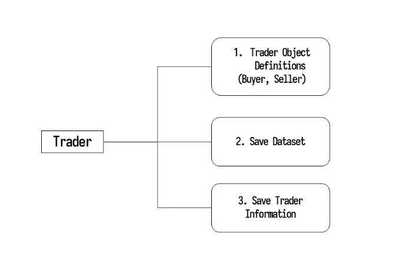
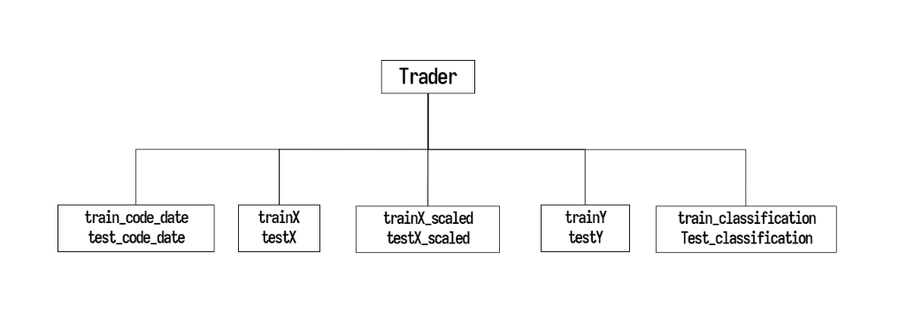
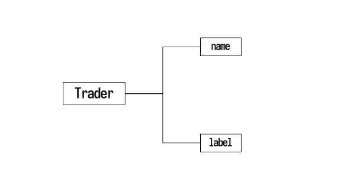

lst_trader = []
트레이더 정의하기
stockait는 모델학습 과정에서 트레이더라는 개념이 나옵니다. 게임 캐릭터가 장비를 장착하는 것 처럼 하나의 트레이더 안에 모델학습에 필요한 데이터셋을 저장하고, 모델의 정보, 주식 매매와 관련된 정보를 저장해놓습니다. 그 후에 캐릭터가 동작을 수행하는 것과 같이 트레이더를 사용하여 모델 학습을 진행하고, 주식 매매 시뮬레이션까지 수행해볼 수 있는 개념입니다.
다음은 트레이더 기능에 대한 설명입니다.
트레이더의 기능
트레이더는 다음의 세가지 기능을 갖고있습니다.

매수 매도 정보를 포함한 트레이더 객체를 정의하며, 데이터셋을 저장합니다. 추가적으로, 트레이더의 이름과 레이블 정보가 저장됩니다.
첫째, 트레이더 객체 정의

trader.buyer:buyer 객체 안에 두개의 하위 매수 객체를 리스트 형태로 포함됩니다. ([conditional_buyer, machine learning_buyer])trader.seller:seller객체 안에 하위 매도 객체를 포함합니다. (Subseller).
1. conditional_buyer
데이터셋 필터링 조건으로 매수 결정을 하는 객체입니다.
Conditional_buyer.condition:Add a dataset filtering condition to the condition method. (For example, only data with a transaction price (end price x transaction volume) of more than 1 billion won.) condition 메서드에 데이터셋 필터링 조건을 함수로 넣어줍니다. (예를 들어, 거래대금 (종가x거래량)이 1억원 이상인 데이터들)
2. machinelearning_buyer
머신러닝 모델로 매수 결정을 하는 객체입니다.
machinelearning_buyer.algorithm:algorithm 메서드에 유저가 정의한 모델을 넣어줍니다. sklearn 패키지나 pytorch, tensorflow 등으로 정의한 딥러닝 모델 등 과 같이 모든 머신러닝 모델을 추가할 수 있습니다.
3. SubSeller
모든 날짜에 대하여 매도를 결정하는 객체입니다.
둘째, 데이터셋 저장

트레이더 객체 안에 데이터셋을 저장합니다. train data, test data를 넣어주고, 만약 표준화를 진행했다면 train data scaled, test data scaled 까지 넣어줍니다. 그럼 학습에 필요한 데이터셋들을 생성하여 객체에 위와 같이 저장됩니다.
셋째, 트레이더의 정보 저장

Trader.name:트레이더를 구별하는 이름입니다.Trader.label:종속 변수의 타입을 저장합니다. (regression: reg, classification: class&0.02)- stockait에서 지정한 default 종속변수는 다음 날 종가 변화율 (next_change)입니다.
- 따라서 regresion으로 설정하면 종속변수는 next_change,
- class&0.02 와 같이 설정하면 next_change, 즉 다음 날 종가 변화율이 0.02 이상이면 1, 그렇지 않으면 0 으로 이진분류 해줍니다. (다음날의 종가가 0.02 이상 올랐는지 아닌지)
그 다음으로, 트레이더를 정의하는 예시를 보도록 하겠습니다.
트레이더를 정의할 때 다음의 과정을 따라 진행하도록 합니다.
처음으로, 트레이더를 담을 빈 리스트를 하나 선언합니다.
다음은 이미 생성되어있는 머신러닝 패키지로 트레이더를 정의하는 예시입니다.
ex1) LightGBM
from lightgbm import LGBMClassifier
# conditional_buyer: Object that determines acquisition based on data filtering conditions
b1_lg = sai.ConditionalBuyer()
def sampling1(df): # Create a conditional function
condition1 = (-0.3 <= df.D0_Change) & (df.D0_Change <= 0.3) # Remove exceptions that exceed upper and lower limits
condition2 = df.D0_trading_value >= 1000000000 # condition 1: Transaction amount of more than 1 billion won
condition3 = (-0.05 >= df.D0_Change) | (0.05 <= df.D0_Change) # condition 2: Today's stock price change rate is more than 5%
condition = condition1 & condition2 & condition3
return condition
b1_lg.condition = sampling1 # Define the condition function directly (sampling1) and store it in the condition property
# machinelearning_buyer: Object that determines acquisition by machine learning model
b2_lg = sai.MachinelearningBuyer()
# Save user-defined models to algorithm properties
scale_pos_weight = round(72/28 , 2)
params = { 'random_state' : 42,
'scale_pos_weight' : scale_pos_weight,
'learning_rate' : 0.1,
'num_iterations' : 1000,
'max_depth' : 4,
'n_jobs' : 30,
'boost_from_average' : False,
'objective' : 'binary' }
b2_lg.algorithm = LGBMClassifier( **params )
# SubSeller: Object that determines selling all of the following days
sell_all = sai.SubSeller()
# Trader Object
t1 = sai.Trader()
t1.name = 'saiLightGBM' # Trader's name
t1.label = 'class&0.02' # Set the Trader dependent variable (do not set if it is regression analysis)
t1.buyer = sai.Buyer([b1_lg, b2_lg]) # [ conditional buyer, machinelearning buyer ]
t1.seller = sai.Seller(sell_all)
lst_trader.append(t1)ex2) XGBoost
from xgboost import XGBClassifier
b1_xgb = sai.ConditionalBuyer()
def sampling2(df):
condition1 = (-0.3 <= df.D0_Change) & (df.D0_Change <= 0.3)
condition2 = df.D0_trading_value >= 1000000000
condition3 = (-0.05 >= df.D0_Change) | (0.05 <= df.D0_Change)
condition = condition1 & condition2 & condition3
return condition
b1_xgb.condition = sampling2
b2_xgb = sai.MachinelearningBuyer()
scale_pos_weight = round(72/28 , 2)
b2_xgb.algorithm = XGBClassifier(random_state = 42,
n_jobs=30,
scale_pos_weight=scale_pos_weight,
learning_rate=0.1,
max_depth=4,
n_estimators=1000,
)
sell_all = sai.SubSeller()
t2 = sai.Trader()
t2.name = 'saiXGboost'
t2.label = 'class&0.02'
t2.buyer = sai.Buyer([b1_xgb, b2_xgb])
t2.seller = sai.Seller(sell_all)
lst_trader.append(t2) ex3) LogisticRegression
from sklearn.linear_model import LogisticRegression
b1_lr = sai.ConditionalBuyer()
def sampling3(df):
condition1 = (-0.3 <= df.D0_Change) & (df.D0_Change <= 0.3)
condition2 = df.D0_trading_value >= 1000000000
condition3 = (-0.05 >= df.D0_Change) | (0.05 <= df.D0_Change)
condition = condition1 & condition2 & condition3
return condition
b1_lr.condition = sampling3
b2_lr = sai.MachinelearningBuyer()
b2_lr.algorithm = LogisticRegression()
sell_all = sai.SubSeller()
t3 = sai.Trader()
t3.name = 'saiLogisticRegression'
t3.label = 'class&0.02'
t3.buyer = sai.Buyer([b1_lr, b2_lr])
t3.seller = sai.Seller(sell_all)
lst_trader.append(t3) ex4) Support Vector Machine
from sklearn.svm import SVC
b1_sv = sai.ConditionalBuyer()
def sampling4(df):
condition1 = (-0.3 <= df.D0_Change) & (df.D0_Change <= 0.3)
condition2 = df.D0_trading_value >= 1000000000
condition3 = (-0.05 >= df.D0_Change) | (0.05 <= df.D0_Change)
condition = condition1 & condition2 & condition3
return condition
b1_sv.condition = sampling4
b2_sv = sai.MachinelearningBuyer()
b2_sv.algorithm = SVC()
sell_all = sai.SubSeller()
t4 = sai.Trader()
t4.name = 'saiSupportVectorMachine'
t4.label = 'class&0.02'
t4.buyer = sai.Buyer([b1_sv, b2_sv])
t4.seller = sai.Seller(sell_all)
lst_trader.append(t4) ex5) Decision Tree
from sklearn.tree import DecisionTreeClassifier
b1_dt = sai.ConditionalBuyer()
def sampling5(df):
condition1 = (-0.3 <= df.D0_Change) & (df.D0_Change <= 0.3)
condition2 = df.D0_trading_value >= 1000000000
condition3 = (-0.05 >= df.D0_Change) | (0.05 <= df.D0_Change)
condition = condition1 & condition2 & condition3
return condition
b1_dt.condition = sampling5
b2_dt = sai.MachinelearningBuyer()
b2_dt.algorithm = DecisionTreeClassifier()
sell_all = sai.SubSeller()
t5 = sai.Trader()
t5.name = 'saiDecisionTree'
t5.label = 'class&0.02'
t5.buyer = sai.Buyer([b1_dt, b2_dt])
t5.seller = sai.Seller(sell_all)
lst_trader.append(t5) ex6) RandomForest
from sklearn.ensemble import RandomForestClassifier
b1_rf = sai.ConditionalBuyer()
def sampling6(df):
condition1 = (-0.3 <= df.D0_Change) & (df.D0_Change <= 0.3)
condition2 = df.D0_trading_value >= 1000000000
condition3 = (-0.05 >= df.D0_Change) | (0.05 <= df.D0_Change)
condition = condition1 & condition2 & condition3
return condition
b1_rf.condition = sampling6
b2_rf = sai.MachinelearningBuyer()
b2_rf.algorithm = RandomForestClassifier()
sell_all = sai.SubSeller()
t6 = sai.Trader()
t6.name = 'saiDecisionTree'
t6.label = 'class&0.02'
t6.buyer = sai.Buyer([b1_rf, b2_rf])
t6.seller = sai.Seller(sell_all)
lst_trader.append(t6)
다음은 keras를 사용하여 LSTM 모델을 정의하는 딥러닝 모델의 예시입니다. 위의 머신러닝 모델과 다른 점은, data_transform이라는 속성을 하나 더 추가해서 정의해주어야 합니다.
ex7) LSTM
⭐ 딥러닝 모델을 사용하기 위해서는 2차원 구조로 데이터셋 변환을 수행하는 transform 함수를 정의하고 data_transform 속성에 넣어줍니다. 아래 예시에서는 1x480 데이터셋을 10x48로 변환시켜주고, 모델 구조를 정의할 때 input_shape을 그에 맞게 (10, 48)로 지정해주었습니다. 사용하는 데이터셋의 구조를 제대로 파악하고, 변환 후의 input shape을 제대로 설정해주는 것이 중요합니다.
from tensorflow import keras
b1_ls = sai.ConditionalBuyer()
def sampling7(df):
condition1 = (-0.3 <= df.D0_Change) & (df.D0_Change <= 0.3)
condition2 = df.D0_trading_value >= 1000000000
condition3 = (-0.05 >= df.D0_Change) | (0.05 <= df.D0_Change)
condition = condition1 & condition2 & condition3
return condition
b1_ls.condition = sampling7
b2_ls = sai.MachinelearningBuyer()
# ⭐ User-defined functions (users who want deep learning modeling)
def transform(data): # A function that converts into a two-dimensional structure / data: list (lst_time_series)
data_2d = []
n_col = int(len(data[0]) / 10)
for row in data:
data_2d.append([])
for i in range(0, len(row), n_col):
data_2d[-1].append(row[i:i+n_col])
return np.array(data_2d)
# Directly define a two-dimensional structure transformation function (transform) and store it in the data_transform property
b2_ls.data_transform = transform
model = keras.models.Sequential()
model.add(keras.layers.InputLayer(input_shape=(10, 48)))
model.add(keras.layers.LSTM(128, activation='relu', return_sequences=True))
model.add(keras.layers.LSTM(64, activation='relu', return_sequences=True))
model.add(keras.layers.Dropout(0.2))
model.add(keras.layers.LSTM(64, activation='relu', return_sequences=True))
model.add(keras.layers.LSTM(64, activation='relu', return_sequences=True))
model.add(keras.layers.LSTM(64, activation='relu', return_sequences=True))
model.add(keras.layers.LSTM(32, activation='relu', return_sequences=False))
model.add(keras.layers.Dropout(0.2))
model.add(keras.layers.Dense(1, activation='sigmoid'))
model.compile(optimizer=keras.optimizers.Adam(
learning_rate=keras.optimizers.schedules.ExponentialDecay(0.05,decay_steps=100000,decay_rate=0.96)),
loss="binary_crossentropy",
metrics=['accuracy'])
b2_ls.algorithm = model
sell_all = sai.SubSeller()
t7 = sai.Trader()
t7.name = 'saiLSTM'
t7.label = 'class&0.02'
t7.buyer = sai.Buyer([b1_ls, b2_ls])
t7.seller = sai.Seller(sell_all)
lst_trader.append(t7)트레이더를 정의하고, 처음에 생성했던 lst_trader 리스트에 각각의 트레이더를 마지막 줄에서 append 해줍니다.
트레이더를 정의하고, 모든 트레이더들이 모아진 lst_trader를 사용하여 정의한 여러개의 모델로 모델 학습 및 주식 매매를 실험해볼 수 있습니다. stockait 사용하여 여러 모델 학습해보기 글에 예시를 볼 수 있으며, 좋은 참고 자료가 될 것입니다.